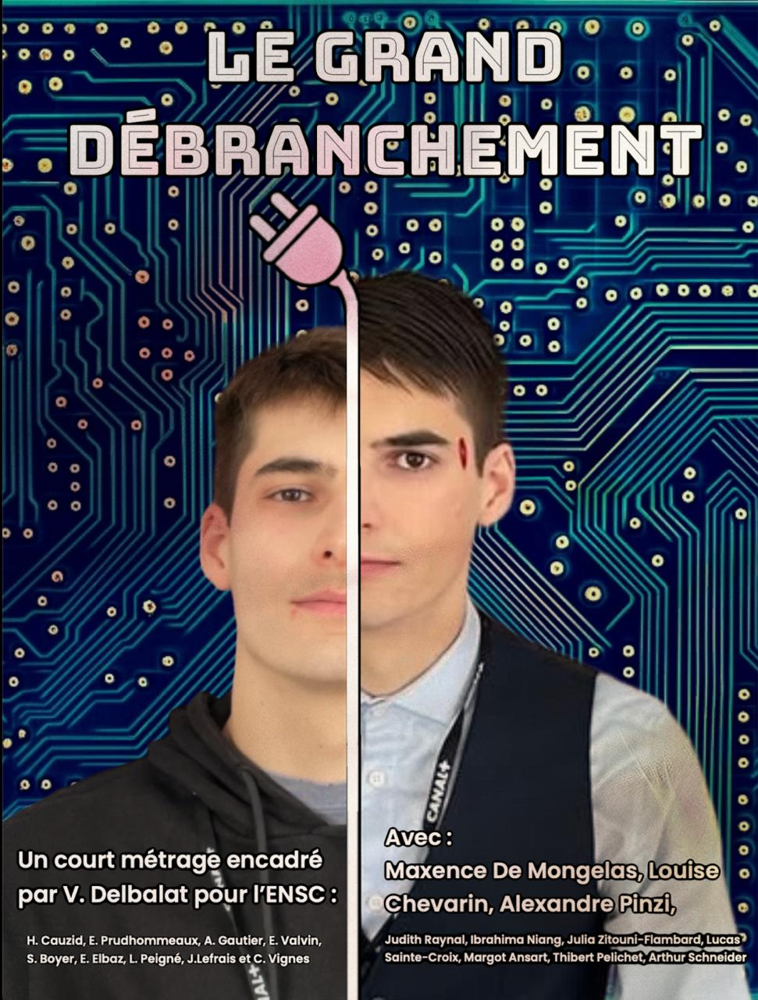

PROJET TRANSDISCIPLINAIRE
Fiction Cognitique

Affiche promotionnelle du film
Cadre et Objectifs
Ce film a été réalisé dans le cadre du projet transdisciplinaire de l’ENSC. Il vise à explorer des problématiques cognitives à travers une œuvre de fiction audiovisuelle.
Le projet implique deux groupes de travail, constitués de 9 étudiants au total, encadrés par Vincent Delbalat (tuteur et client).
Nous avons choisi de produire un court-métrage original mêlant action et réflexion afin de stimuler l’engagement du spectateur, tout en abordant les enjeux humains, sociaux et technologiques soulevés par la cognitique et l’intelligence artificielle.
Frise des livrables
Décembre
Scénario finalisé
Janvier
Découpage technique & prépa-tournage
Février
Tournage
Mars / Avril
Post-production
Mai
Film final + carnet de bord
Visionner le film
Le grand débranchement
Co-écrit et réalisé par : Simon Boyer, Hugo Cauzid, Evan Elbaz, Adélie Gautier, Jeanne Lefrais, Erwan Prudhommeaux, Louison Peigné, Emilie Valvin et Camille Vignes